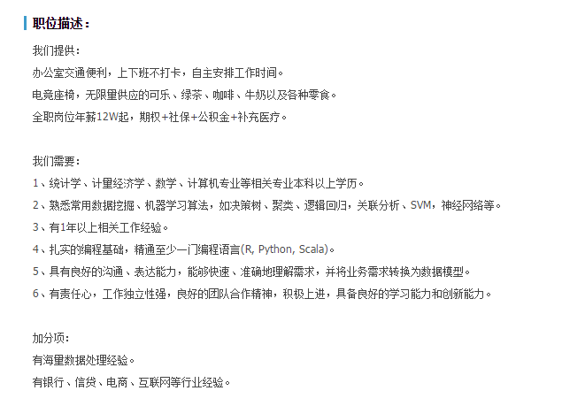
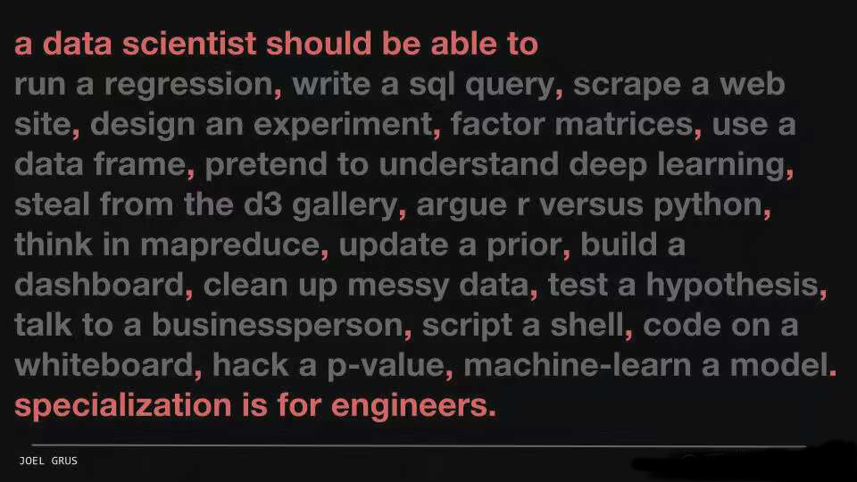

- 数据科学
- 可视化
- slidify
- xaringan
数据科学与HTML5幻灯片
郎大为 J.D. Power
Outlines
数据科学与统计学
数据科学的定义
谷歌首席经济学家Hal Varian在2009年说，下一个十年最有吸引力的工作就是统计学家。能获取并处理数据，从中得到有用信息并能图形化，并使人们得以理解，这将是非常重要的技能。
- 在此处他所称的“统计学家”，实际上是能够提取大数据集的信息，然后展现给非数据专家的那些人，我们也可称之为数据极客（Data Geek）或是数据科学家(Data Scientists)。
数据科学家的JD

数据科学

统计学
统计学是在数据分析的基础上，自17世纪中叶产生并逐步发展起来的一门学科。 它是研究如何测定、收集、整理、归纳和分析反映数据资料，以便给出正确信息的科学。
- 测定：试验设计
- 收集：抽样调查
- 整理：数据清理
- 归纳：描述统计
- 分析：统计推断，假设检验，数理统计，统计模型
技术栈
- 分析
- R
- Python/Spark
- 后端
- SQL(MySQL/SQL Server/Hive/Oracle)
- Shell &Git
- Pyhton/Node
- 前端
- HTML
- JS(D3,Echarts,jQuery,...)
技术栈

理论储备
- 统计
- 概率，随机变量，分布
- 假设检验
- 统计模型
- 机器学习
- 有监督学习
- 无监督学习
数据科学家的特质
- 数据敏感
- 好奇心
- story-teller
- 学习能力
数据科学做什么

数据科学的学习大纲
- 总览(git,Rstudio)
- R语言入门
- 读取与清理数据
- 数据可视化
- 可重复性研究
- 统计推断
- 回归模型
- 机器学习
- 数据产品开发
1总览
- 了解概念
- 学习Git， github
- Rstudio安装使用
Git
- 优秀的版本控制工具
- 本地使用
# 声明需要添加的文件
git add -A
# 存档
git commit -am 'some infomation'
- 可用
git log，git reset来恢复存档

Github
- 分享，协作代码平台
## 下载repo
git clone http://github.com/lchiffon/wordcloud2
git pull
## 三板斧
git add -A
git commit -am 'some infomation'
git push
R语言入门
- 查帮助
- packages使用
- 控制语句，函数，apply
- Play with swirl
install.packages("swirl") swirl()
读取与清洗数据
- 传统数据: .xlsx, .txt, .csv
- 数据库: MySQL, SQLserver, mogoDB, HIVE, ...
- 其他程序的数据: Matlab, Stata, SAS
- 网页数据(爬虫): .json, .html, .xml
- 地理信息数据: .topojson, .geojson, .shp, .map
数据可视化
- 静态: ggplot2.org/doc
- 动态: htmlwidgets
静态可视化适合用于探索型可视化，论文，书籍等展示形式
web可视化适合在网页，H5页面，App，产品中使用，更多用于展示型可视化
可重复研究
knitr与rmarkdown- 生成html, docx, pdf, slides, dashboard
统计推断
- 传统的概率论与数理统计课程， 学习统计相关的内容
回归分析
- 经典的回归分析
- logistic回归
- 各种异常情况的处理
机器学习
- 有监督学习
- 无监督学习
开发数据产品
- 开发端： package
- 产品端： shiny
- 报告端： slidify
web可视化
Topic
HTML5的幻灯片
HTML5的幻灯片
- slidify
- xaringan
Rpres
slidify与可视化
- 保存并使用iframe
- 在slidify中转为静态图片
- xaringan中使用
eval=require('leafletCN')
<iframe data-src="html/pall.html" height="600px" width="800px"></iframe>
Contact Me
- 邮箱：
- 微博：
- @郎大为Chiffon